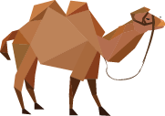
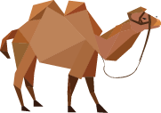

诺鲁孜节 诺鲁孜节距今至少已有3千年的历史，内容与汉民族的春节相似。该节 日形成初期，包括维吾尔族在内的突厥部落的先辈过着游牧生活，他们在晚 冬初春把昼夜时差持平之日称之为“日生”、“年头”，并把此日开头的月 称之为“羊羔月”，维吾尔族把一天的时间分为日出更、午时更、日落更、 星现更、午夜更和黎明更等六更。 泽普县各族群众载歌载舞欢庆诺鲁孜节。诺鲁孜节仪式在节日的黎明更 开始。那一天，男女老少都要着民族盛装举行各种节日活动。各家的家长首 先起床，在房屋正中燃烧起一堆松柏树枝，将冒烟的树枝在每人头上转一圈， 预祝他们在新的一年中平安快乐。 然后，家长把冒烟的松枝带到牲畜圈门口，让畜群在烟上通过，祈求新 的一年里，牲畜膘肥体壮，迅速繁殖。节日当天日出更当天日出更以后，维 维吾尔人要做“诺鲁孜饭”，家家户户用剩余的粮食和食物，加上多种佐料 也加野生调味佐料）煮成稠粥，称作“克缺”或“冲克缺”(丰盛粥)。做这 种饭时，不再宰牲畜。从当天午时更起，维吾尔人成群结队地相互拜年。到 日落更以后，每户请客吃饭，男女老少分别跳舞和唱歌，尽兴表达对新春的 欢悦之情。“诺鲁孜”节过后，在农村，紧张的春耕生产就开始了。